¿Cuándo son las fechas para inscribir materias?
¿Cómo es el proceso?
¿Cuándo son las fechas?
Las fechas generales para la carga de materias están disponibles en el calendario escolar (puedes acceder haciendo clic Aquí). Para el periodo agosto-diciembre 2026, la carga de materias se realizará del 29 de julio al 15 de agosto.
Para realizar tu carga específica de materias, debes contar con una cita previa, la cual es gestionada por la escuela. Sin esta cita, no podrás acceder al sistema.
Para conocer el día y la hora exactos en que puedes realizar tu carga de materias, debes ingresar a la plataforma NET Anáhuac. Ahí encontrarás tu cita asignada
1.Ingresa a la aplicación NET Anáhuac, después presiona la barra lateral
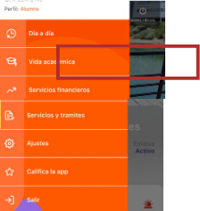
2. Selecciona el apartado de vida académica
3. Selecciona el apartado de Cita de inscripción
Selecciona la fecha
en la que deseas inscribirte y revisa el horario asignado para la carga de tus materias.
¿Cómo es el proceso?
1. Antes de iniciar, es fundamental contar con los NRC de las materias que ingresarás en la plataforma. Estos serán enviados por correo electrónico y varían según el tipo de materia:
- Materias de medicina: Lic. Tania Amira Hernandez Nieto
- Materias multisede/oferta académica: Operación académica
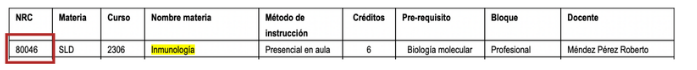
2. Ingresa al SIU (Sistema integral universitario) Aquí
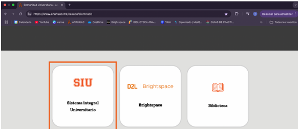
3. Una vez dentro del SIU, selecciona servicios al alumno
4. Luego, haz clic en Inscripciones
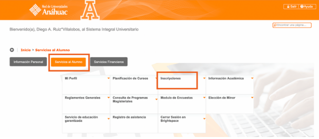
5. Selecciona Alta y baja de Cursos Nueva
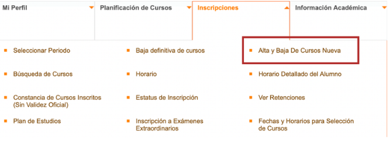
5. Después, elige Inscribirse a clases
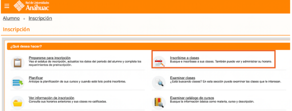
5. Selecciona el periodo correspondiente. Si es para el semestre, el nombre del periodo deberá comenzar con ‘Sem’; si es para verano, deberá comenzar con ‘Ver’.
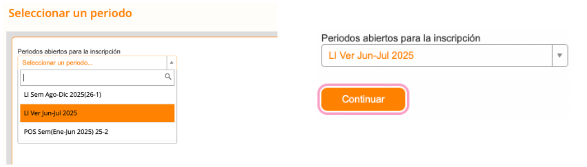
6. Ahora dirígete a la opción Ingresar NRC en la barra superior. Coloca el NRC recibido.
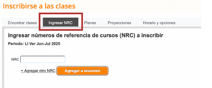
6. Al ingresar el NRC, en la parte izquierda se mostrará el horario de clases, y en la parte derecha, la información detallada de cada materia (nombre, créditos, tipo de horario, estatus, etc). Repite este procedimiento para agregar todas las materias.
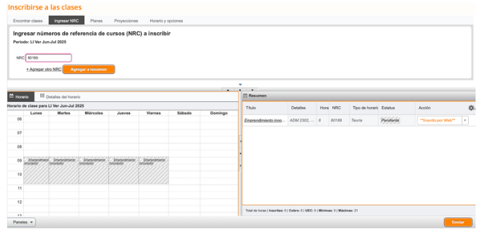
7. Cuando hayas terminado, selecciona Enviar.
Una vez que hayas enviado tus materias el estatus de cada matertia deberá cambiar
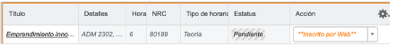
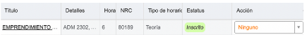
errores comunes
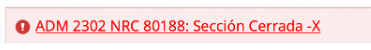
Significa que el cupo máximo ya fue alcanzado, pero no te preocupes, puedes solicitar un espacio.
En ese caso, comunícate con:
Materias de medicina: Lic. Tania Amira Hernández Nieto <tania.hernandezn@anahuac.mx>
Materias multisede / oferta académica: Operación Académica > operacionacademica.lisc@anahuac.mx
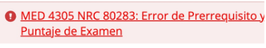
Esto significa que no puedes inscribir la materia porque:
- No has acreditado una o varias materias prerrequisito. Es decir, hay materias anteriores que debes haber aprobado antes de poder cursar esta.
- Tu puntaje en el examen diagnóstico o algún otro requisito evaluativo no es suficiente.
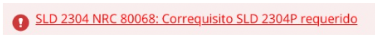
Esto significa que intentaste cargar solo la parte teórica o solo la parte práctica de la materia, pero ambas deben ir juntas. Es un correquisito, lo que quiere decir que:
- Para inscribir la teoría también debes inscribir al mismo tiempo la práctica y viceversa.